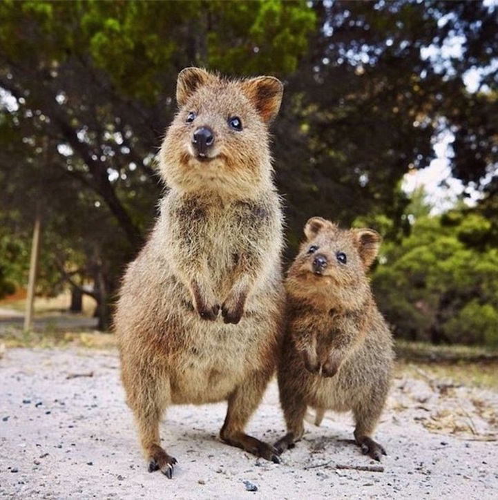

This is a Main Heading
This is a Level 2 Heading
This is a Level 3 Heading
This is a Level 4 Heading
This is a Level 5 Heading
This is a Level 6 Heading
This text might be an introduction to the rest of the page. And if the page is a
long one it might be split up into several sub-headings.
This is a Sub-Heading
Many long articles have sub-headings so to help you follow the structure of what
is being written. There may even be sub-sub-headings (or lower-level headings).
Another Sub-Heading
Here you can see another sub-heading.
The moon is drifting away from Earth.
The moon is drifting away from Earth.
The moon is drifting away from
Earth.
On the 4th of September you will learn about E=MC2.
The amount of CO2 in the atmosphere grew by 2ppm in 20091.
This is how we make a word appear bold.
Inside a product description you might see some key features in bold.
The Earth
gets one hundred tons heavier every day
due to falling space dust.
This is how we make a word appear italic.
It's a potato Solanum teberosum.
Captain Cook sailed to Australia on the Endeavour.
Venus is the only planet that rotates clockwise.
Jupiter is bigger than all the other planets combined.
Laptop computer:
Was $995
Now only $375
It was the worst best idea she had ever had.
homer@example.org
742 Evergreen Terrace, Springfield.
Scrambled Eggs
Eggs are one of my favorite foods. Here is a recipe for deliciously rich scrambled eggs.
Ingredients
- 2 eggs
- 1tbs butter
- 2tbs cream
Method
- Melt butter in a frying pan over a medium heat
- Gently mix the eggs and cream in a bowl
- Once butter has melted add cream and eggs
- Using a spatula fold the eggs from the edge of the pan to the center every 20 seconds (as if you are making an omelette)
- When the eggs are still moist remove from the heat (it will continue to cook on the plate until served)
Nested Lists
- Mousses
- Pastries
- Croissant
- Mille-feuille
- Palmier
- Profiterole
- Tarts


There are around 10,000 living species of birds that inhabit different ecosystems from the Arctic to the Antarctic. Many species undertake long distance annual migrations, and many more perform shorter irregular journeys.
There are around 10,000 living species of birds that inhabit different ecosystems from the Arctic to the Antarctic. Many species undertake long distance annual migrations, and many more perform shorter irregular journeys.
There are around 10,000 living species of birds that inhabit different ecosystems from the Arctic to the Antarctic. Many species undertake long distance annual migrations, and many more perform shorter irregular journeys.
There are around 10,000 living species of birds that inhabit different ecosystems from the Arctic to the Antarctic. Many species undertake long distance annual migrations, and many more perform shorter irregular journeys.
There are around 10,000 living species of birds that inhabit different ecosystems from the Arctic to the Antarctic. Many species undertake long distance annual migrations, and many more perform shorter irregular journeys.
There are around 10,000 living species of birds that inhabit different ecosystems from the Arctic to the Antarctic. Many species undertake long distance annual migrations, and many more perform shorter irregular journeys.
There are around 10,000 living species of birds that inhabit different ecosystems from the Arctic to the Antarctic. Many species undertake long distance annual migrations, and many more perform shorter irregular journeys.
There are around 10,000 living species of birds that inhabit different ecosystems from the Arctic to the Antarctic. Many species undertake long distance annual migrations, and many more perform shorter irregular journeys.
| 15 |
15 |
30 |
| 45 |
60 |
45 |
| 60 |
90 |
90 |
|
Withdrawn |
Credit |
Balance |
| January |
250.00 |
660.50 |
410.50 |
| February |
135.55 |
895.20 |
1170.15 |